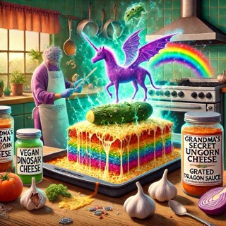

Lasagna

Description
This is not my recipe for my favorite dish, lasagna.
Ingredients
- 12 sheets of “Gourmet-Approved” lasagna noodles (or, you know, regular cardboard works too)
- 3 cups of Vegan Unicorn Cheese (from the mystical land of Lactose-Free-istan)
- 2 lbs of Ground Beef (or T-Rex meat if you're feeling fancy)
- 1 jar of Grandma’s Secret Tomato Sauce (or whatever’s in that jar at the back of the fridge)
- 1 whole Imaginary Eggplant (picked fresh from the garden of your mind)
- 2 cups of “Not So Fresh” Spinach (don’t worry, it adds flavor... probably)
- 5 cloves of Garlic of Eternal Life (ensures immortality or at least repels vampires)
- A dash of Dragon Tears (or a splash of tap water... your choice)
- 1 cup of Grated Optimism (optional, but recommended)
- 1 Mystical Baking Pan (seriously, don't try this without one)
Steps
- Preheat your oven to “Hope It’s the Right Temperature” degrees. (No one really knows what 375°F feels like.)
- Boil the lasagna noodles until they achieve “Floppy Yet Not Too Sad” texture. (Drain them, then contemplate life
while
they cool.)
- In a cauldron, combine the ground beef (or dinosaur meat) with Garlic of Eternal Life until your kitchen smells
like it
could banish spirits.
- Layer the noodles in the Mystical Baking Pan like you're building the world’s most unsteady Jenga tower.
- Spread a healthy layer of Grandma’s Secret Tomato Sauce (even though we all know it’s just from a jar) over the
noodles.
Pretend you made it from scratch.
- Add a sprinkling of Grated Optimism to the sauce layer, because at this point, we all need a little positivity.
- Carefully arrange the Vegan Unicorn Cheese as if it holds the secrets of the universe.
- Toss in the Imaginary Eggplant for good measure. You won't see it, but trust me, it's in there.
- Repeat layers until your Mystical Baking Pan starts to look like an ancient artifact of cheesy goodness.
- Cover the lasagna with a generous layer of Dragon Tears (or aluminum foil if your dragons are on strike).
- Bake for 40 minutes, or until your kitchen fills with the scent of Questionable Decisions.
- Let the lasagna cool for 10 minutes, unless you enjoy the thrill of molten cheese burns.
- Serve immediately and enjoy the Weirdest Lasagna Ever, with a side of disbelief and confusion!
Enjoy!
I am obligated to say that the ingredients, steps, and image were generated by ChatGPT.